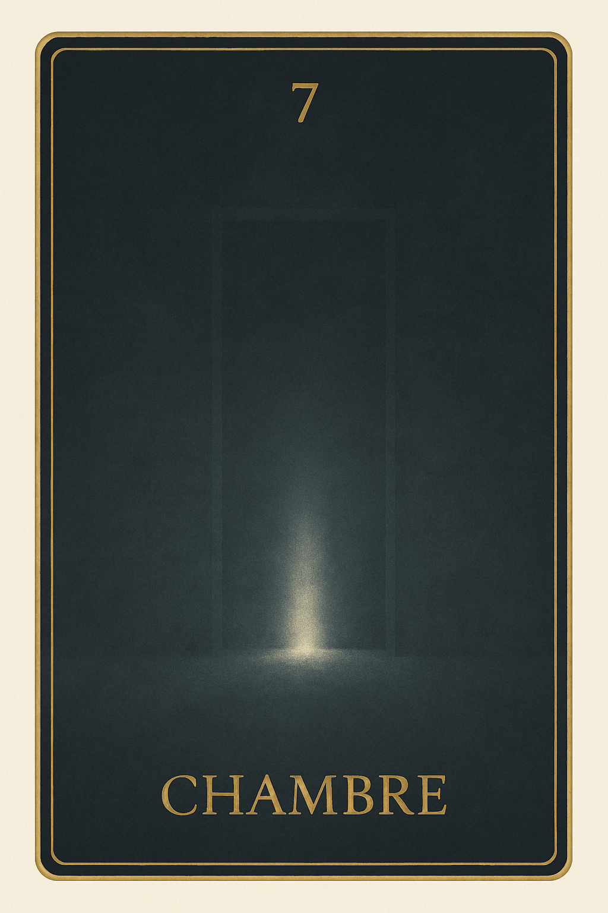
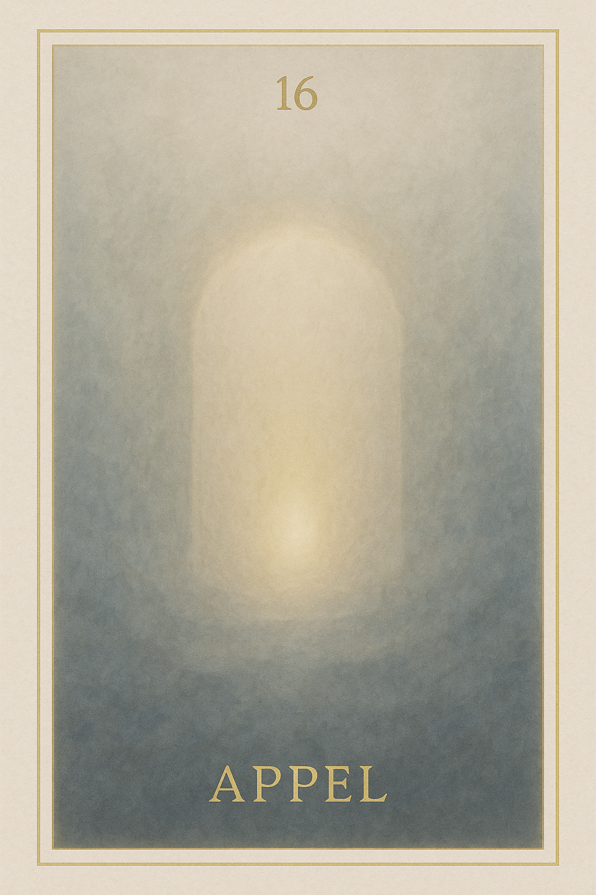
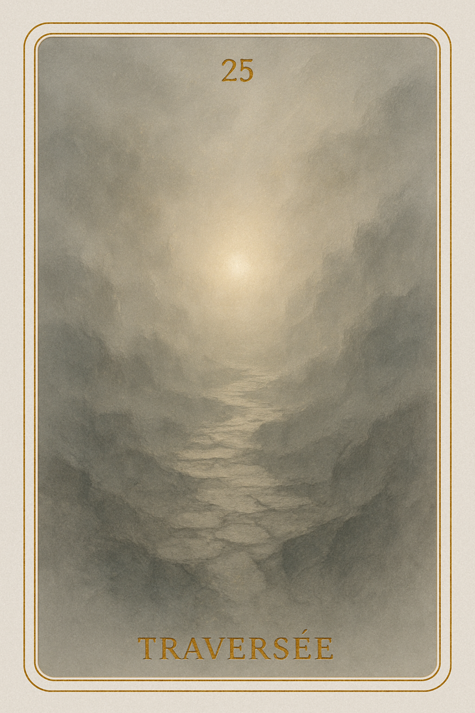
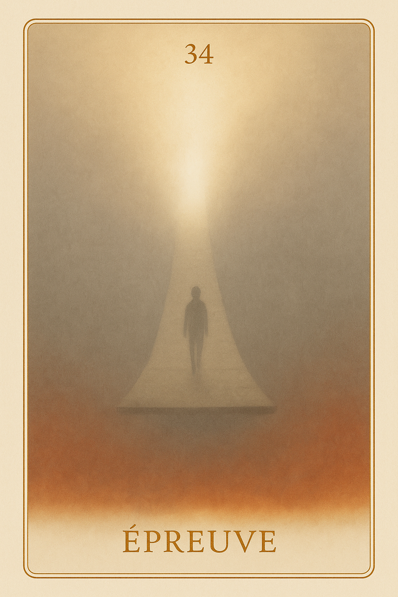
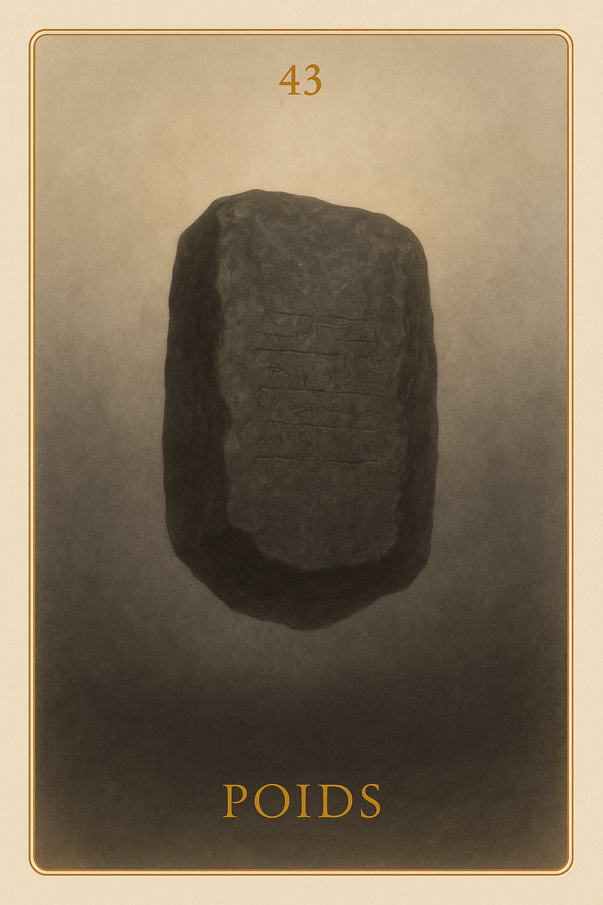
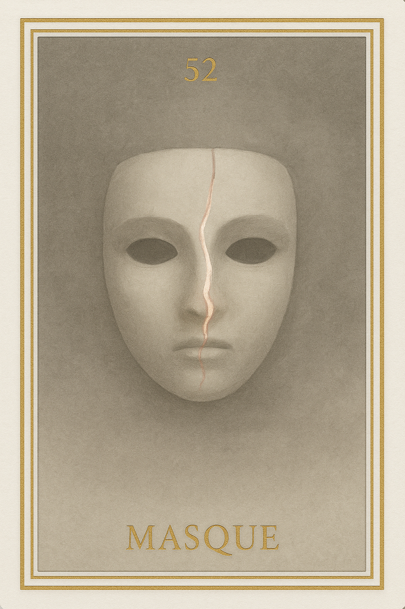
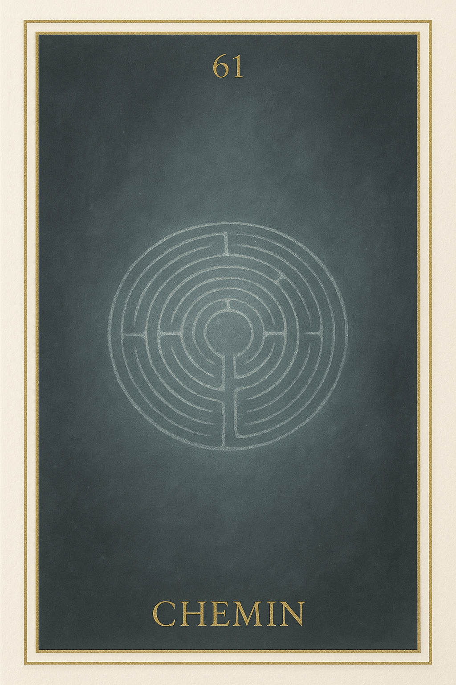
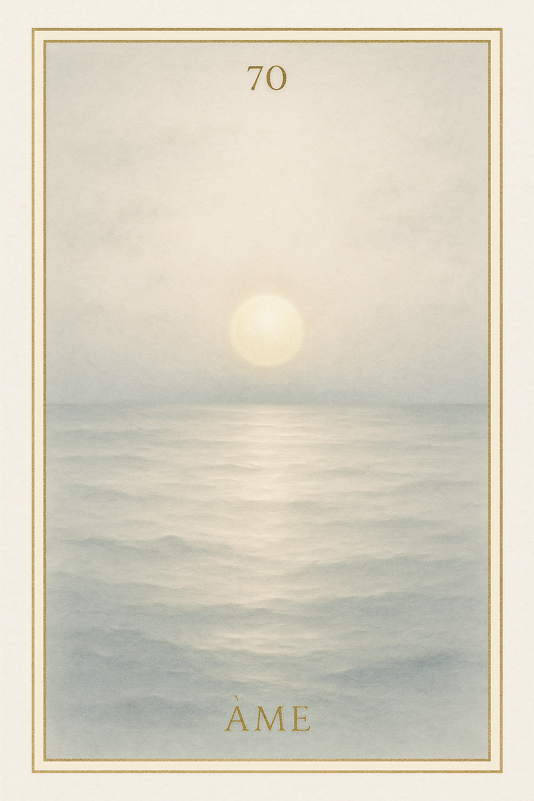
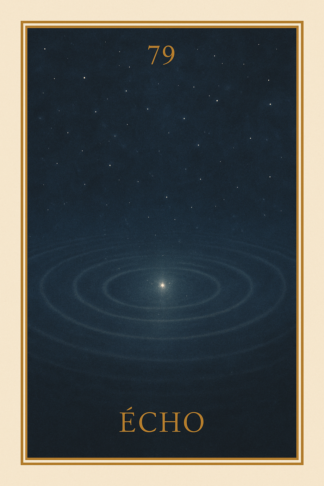

Famille 7 – Osiris (Saturne)
La famille 7 explore les grandes traversées de l’âme : pertes, ruptures, deuils ou détachements profonds. Osiris guide ici le passage, et Saturne en révèle la structure. Chaque carte invite à reconnaître ce qui a été quitté, perdu ou laissé derrière soi — non pour s’en désoler, mais pour intégrer pleinement la sagesse du passage. Ces cartes ne parlent pas de douleur, mais de transformation.
Carte 7 – Chambre
Mots-clés : passage intérieur, isolement spirituel, silence sacré, transformation âme, chambre symbolique
Chiffre caché : 97
Lecture inversée : 9 → 7
Divinité principale : Osiris
Planète secondaire : Soleil
Divinité secondaire : Râ
Interprétation de la carte 7 : Chambre (droite)
Lecture intuitive rapide
L’âme entre dans une chambre intérieure, fermée, calme, hors du temps. Elle n’y comprend rien encore, mais elle sent que quelque chose va se dénouer. Rien n’est dit, personne ne vient, mais tout est en attente. La chambre n’est ni un refuge, ni une prison, elle est un espace suspendu, dans lequel l’âme doit rester, avant d’être conduite vers ce qu’elle a semé.
1. Caractère de la personne
L’âme entre dans un espace silencieux. Elle attend sans comprendre, dans un lieu qui n’est ni ici ni ailleurs. Elle sent que tout va bientôt basculer.
2. Plan affectif
L’âme n’est plus reliée à ses liens affectifs, mais ne les a pas encore oubliés. C’est un vide doux, comme un détachement progressif.
5. Plan spirituel
Spirituellement, CHAMBRE est l’antichambre d’Osiris, le lieu où le temps terrestre ne fonctionne plus. C’est l’isolement sacré, avant le dépouillement.
Carte 7 : Chambre (inversée)
1. Caractère de la personne
L’âme rejette l’attente, elle cherche à fuir, elle craint ce silence, et ne supporte pas d’être seule face à elle-même.
2. Plan affectif
L’âme espère encore des liens extérieurs, elle se rattache à des présences passées, et refuse l’isolement nécessaire à sa libération.
5. Plan spirituel
CHAMBRE inversée indique une résistance au vide sacré. L’âme ne veut pas traverser le silence, et refuse le processus de dépouillement.
Résumé de la carte 7 : Chambre
CHAMBRE est le lieu d’attente sacrée. C’est la pièce silencieuse où l’âme n’est plus incarnée, mais pas encore confrontée à sa vérité.
À l’endroit, elle accepte le vide et la lenteur.À l’envers, elle rejette l’isolement et cherche à fuir le seuil.
Carte 16 – Appel
Mots-clés : : introspection, passage de vie, silence intérieur, appel intérieur, solitude sacrée
Chiffre caché : 88
Lecture inversée : 8 → 8
Planète secondaire : Terre
Divinité secondaire : Geb
Interprétation de la carte 16 : Appel (droite)
Lecture intuitive rapide
L’âme ressent une vibration grave, stable, silencieuse. Elle ne comprend pas encore ce qu’elle perçoit, mais elle sait que quelque chose l’appelle à avancer. Ce n’est pas une parole. C’est une onde invisible qui attire vers l’épreuve, un champ de vérité qui commence à l’envelopper. Osiris ne parle pas. Mais sa présence est là, claire, irrévocable, douce et dense. Et l’âme sait que le passage commence ici.
1. Caractère de la personne
L’âme sent qu’elle est attendue. Elle ne comprend pas encore, mais ressent l’invitation vibratoire à se rendre là où elle doit aller.
2. Plan affectif
Ce n’est pas une voix, mais une présence silencieuse et sacrée. Un amour austère, mais sûr : celui de celui qui accompagne, pas de celui qui sauve.
5. Plan spirituel
Osiris entre dans le champ de l’âme. Il n’impose rien, mais attire tout vers la vérité. L’âme commence à vibrer en face de ce qu’elle devra traverser.
Carte 16 : Appel (inversée)
1. Caractère de la personne
L’âme entend l’appel, mais résiste. Elle reste figée dans l’attente, paralysée par peur ou inertie.
2. Plan affectif
L’âme se sent seule, abandonnée, ou incapable de faire le premier pas. L’appel est perçu comme un vide, ou comme une menace.
5. Plan spirituel
Osiris est là, mais l’âme détourne le regard. Elle refuse l’épreuve, ou ne reconnaît pas encore la voix qui l’appelle.
Résumé de la carte 16 : Appel
APPEL est le moment sacré où Osiris entre dans la présence de l’âme. Il ne juge pas, il invite. L’âme sait qu’elle devra traverser, mais n’en connaît pas encore la forme.
À l’endroit, elle se laisse appeler.
À l’envers, elle refuse de répondre.
Carte 25 – Traversée
Mots-clés : : passage intérieur, chemin de vie, prise de conscience, transformation personnelle, épreuve de l’âme
Chiffre caché : 106
Lecture inversée : 6 → 0 → 1
Divinité principale : Osiris
Planète secondaire : Jupiter
Divinité secondaire : Amon-Rê
Interprétation de la carte 25 : Traversée (droite)
Lecture intuitive rapide
L’âme sent qu’elle entre dans quelque chose d’inévitable. Ce n’est pas encore le jugement, ni même l’analyse, mais une conscience soudaine : un passage devra avoir lieu. Elle ne sait pas encore comment, ni ce que cela implique. Mais elle ressent que ce qu’elle est et ce qu’elle a été, devront se rencontrer. Il y a une gravité, une voix silencieuse, et l’évidence d’un mouvement intérieur à venir, que rien ne pourra arrêter.
1. Caractère de la personne
L’âme sent qu’un passage est devant elle. Elle ne peut pas encore y entrer, mais elle sait qu’il l’attend.
2. Plan affectif
L’âme pressent qu’elle devra se confronter à ce qu’elle a aimé, choisi ou fui. Le lien devient chemin.
5. Plan spirituel
Un processus commence. L’âme sent qu’elle devra marcher vers sa propre vérité.
Carte 25 : Traversée (inversée)
1. Caractère de la personne
L’âme sait, mais recule. Elle refuse ce qui semble trop vaste, trop grave, trop définitif.
2. Plan affectif
L’âme rejette ce qui l’appelle intérieurement. Elle espère encore éviter ce qui la traverse.
5. Plan spirituel
L’âme refuse d’entrer dans la traversée. Elle bloque le chemin vers l’épreuve juste.
Résumé de la carte 25 : Traversée
TRAVERSÉE est le moment où l’âme prend conscience que le chemin intérieur commence vraiment. Ce n’est pas encore l’analyse ou le jugement, mais une prise de conscience irrévocable.
À l’endroit, elle s’engage.
À l’envers, elle retarde l’inévitable.
Carte 34 – Epreuve
Mots-clés : : traversée spirituelle, épreuve intérieure, vérité de l’âme, passage initiatique, purification symbolique
Chiffre caché : 115
Lecture inversée : 5 → 1 → 1
Divinité principale : Osiris
Planète secondaire : Mars
Divinité secondaire : Sekhmet
Interprétation de la carte 34 : Epreuve (droite)
Lecture intuitive rapide
L’âme a franchi la porte. Il n’y a plus de retour. Ce n’est pas encore le jugement, mais c’est déjà la vérité en marche. Elle entre dans les limbes : pas un lieu de peine, mais un couloir de feu, où ce qui reste d’elle doit être confronté à sa propre vibration. Osiris marche à ses côtés, silencieux, droit, incorruptible. Il ne pèse pas encore. Mais chaque pas que l’âme fait la rapproche de Maât. Et Sekhmet veille. Pas pour la détruire — mais pour brûler ce qui ment. Ce n’est pas une punition. C’est l’épreuve juste, celle qui commence quand la vérité devient inévitable.
1. Caractère de la personne
L’âme entre dans ce qu’elle a refusé de voir. Elle commence à sentir ce qui doit être traversé.
2. Plan affectif
L’âme voit les liens qu’elle a tissés ou défaits. Chaque attachement revient sous forme de vérité nue.
5. Plan spirituel
L’âme entre dans l’Épreuve. Ce n’est plus le seuil : c’est la traversée vers Maât.
Carte 34 : Epreuve (inversée)
1. Caractère de la personne
L’âme recule face à l’épreuve. Elle rejette ce qu’elle ressent comme une punition.
2. Plan affectif
L’âme se referme sur ses blessures. Elle ne veut pas affronter ce qu’elle a fait de l’amour.
5. Plan spirituel
L’âme s’oppose à la marche d’Osiris. Le feu de Sekhmet monte, car rien ne peut rester figé dans les limbes.
Résumé de la carte 34 : Epreuve
ÉPREUVE est l’instant où l’âme entre dans les limbes. Le seuil est franchi, la porte est fermée derrière. Osiris l’accompagne. Sekhmet veille.
À l’endroit, l’âme accepte de traverser.
À l’envers, elle résiste — et le feu monte.
Carte 43 – Poids
Mots-clés : : charge émotionnelle, poids intérieur, prise de conscience, bilan de l’âme, vérité personnelle
Chiffre caché : 124
Lecture inversée : 4 → 2 → 1
Divinité principale : Osiris
Planète secondaire : Mercure
Divinité secondaire : Thot
Interprétation de la carte 43 : Poids (droite)
Lecture intuitive rapide
L’épreuve est passée. L’âme n’est plus au milieu du passage. Mais elle sent ce qu’elle a transporté avec elle. Ce n’est plus de la peur. Ce n’est plus de la fuite. C’est un poids muet, posé là, au fond de l’être. Ce poids, c’est elle-même. Pas son histoire. Pas ses gestes. Mais ce qu’elle a compris de ce qu’elle est devenue. Ce n’est pas un jugement. Ce n’est pas un châtiment. C’est une réalité vibratoire stable, que ni Osiris, ni Thot ne modifient. Ils la regardent, et l’âme se regarde avec eux. Elle sait ce qu’elle porte maintenant, et ce savoir la prépare à la suite.
1. Caractère de la personne
L’âme sent ce qu’elle a traversé. Elle reconnaît ce qu’elle porte encore.
2. Plan affectif
L’âme voit ce qu’elle a infligé ou accepté. Ce poids devient connaissance.
5. Plan spirituel
Le poids de l’épreuve ne pèse plus : il révèle la densité réelle de l’être.
Carte 43 : Poids (inversée)
1. Caractère de la personne
L’âme ne veut pas voir ce qu’elle porte encore. Le poids devient un malaise.
2. Plan affectif
L’âme nie sa part dans les liens passés. Elle accuse ou s’efface.
5. Plan spirituel
L’âme rejette la mémoire vibratoire. Elle refuse de reconnaître ce qui est resté.
Résumé de la carte 43 : Poids
POIDS est le moment où l’âme reconnaît ce qu’elle porte encore, après l’épreuve, sans fuite ni justification. Ce poids devient vérité.
À l’endroit, elle le regarde.
À l’envers, elle le nie — mais il agit.
Carte 52 – Masque
Mots-clés : : masque émotionnel, rôle social, image de soi, posture intérieure, vérité cachée
Chiffre caché : 133
Lecture inversée : 3 → 3 → 1
Divinité principale : Osiris
Planète secondaire : Vénus
Divinité secondaire : Hathor
Interprétation de la carte 52 : Masque (droite)
Lecture intuitive rapide
L’âme regarde ce qu’elle a montré. Ce qu’elle a voulu incarner. Ce qu’elle a tenu, porté, défendu. Elle croyait que c’était elle. Mais ce n’était qu’un masque. Un rôle, une forme, adoptée pour ne pas trembler. Osiris lui montre la frontière subtile entre vérité et posture. Hathor lui rappelle ce qu’elle n’a pas osé offrir. Elle voit que sa dureté était peur. Que sa rigueur fût protection. Et que parfois, ce qu’elle croyait juste était seulement supportable. L’âme ne s’effondre pas. Elle dépose le masque, et commence à respirer.
1. Caractère de la personne
L’âme reconnaît la posture qu’elle a tenue. Elle distingue ce qui venait d’elle… et ce qui servait à cacher.
2. Plan affectif
L’âme voit qu’elle a contrôlé ses liens. Elle commence à relâcher ce qui empêchait l’amour réel.
5. Plan spirituel
L’âme démasque la structure rigide qui protégeait son vide. Elle s’ouvre à une vérité plus nue.
Carte 52 : Masque (inversée)
1. Caractère de la personne
L’âme s’identifie encore à son masque. Elle confond forme et être.
2. Plan affectif
L’âme maintient une image affective forte. Elle ne laisse pas voir ce qu’elle ressent vraiment.
5. Plan spirituel
L’âme porte une posture spirituelle qui sonne juste, mais vibre faux. Elle s’y cache encore.
Résumé de la carte 52 : Masque
MASQUE est le moment où l’âme voit ce qu’elle a montré au lieu de se montrer.
À l’endroit, elle reconnaît et respire.
À l’envers, elle reste figée dans son image.
Carte 61 – Chemin
Mots-clés : : chemin de vie, mission personnelle, choix de direction, fidélité intérieure, trajectoire spirituelle
Chiffre caché : 142
Lecture inversée : 2 → 4 → 1
Divinité principale : Osiris
Planète secondaire : Saturne
Divinité secondaire : Osiris
Interprétation de la carte 61 : Chemin (droite)
Lecture intuitive rapide
L’âme regarde le chemin qu’elle a suivi, ce qu’elle a appelé sa voie, ce qu’elle a tenu comme direction juste. Mais ce chemin, était-il habité ? Ou simplement porté par habitude ? Osiris ne juge pas. Il éclaire. Et l’âme comprend que parfois, elle s’est accrochée à une trajectoire pour ne pas tomber, pour se protéger, ou parce qu’elle croyait que c’était ça, sa mission. Elle sent maintenant ce qui était juste… et ce qui était seulement tenu.
1. Caractère de la personne
L’âme reconnaît le chemin qu’elle a cru devoir suivre. Elle revient à ce qui l’a vraiment mise en mouvement.
2. Plan affectif
L’âme voit le lien qu’elle a suivi comme une voie. Elle distingue l’amour de l’attachement à une direction.
5. Plan spirituel
L’âme comprend que sa mission n’était pas une route à tenir. Elle revient à l’élan vivant.
Carte 61 : Chemin (inversée)
1. Caractère de la personne
L’âme a suivi un axe figé. Elle s’y est tenue même quand il ne vibrait plus.
2. Plan affectif
L’âme s’est accrochée à une direction relationnelle. Elle confond fidélité et alignement.
5. Plan spirituel
L’âme a confondu chemin et forme. Elle a tenu une trajectoire morte.
Résumé de la carte 61 : Chemin
CHEMIN est le moment où l’âme regarde la direction qu’elle a suivie.
À l’endroit, elle revient à ce qui mettait en mouvement.
À l’envers, elle voit ce qu’elle a tenu sans vie.
Carte 70 – Âme
Mots-clés : : bilan de l’âme, vérité intérieure, essence spirituelle, se reconnecter à soi, jugement intérieur
Chiffre caché : 151
Lecture inversée : 1 → 5 → 1
Divinité principale : Osiris
Planète secondaire : Uranus
Divinité secondaire : Maât
Interprétation de la carte 70 : Âme (droite)
Lecture intuitive rapide
L’âme ne pose plus un fait. Elle ne dépose plus un lien, une colère, un amour, un rayonnement. Elle se dépose. Elle-même. C’est le moment le plus silencieux du bilan. Il n’y a plus d’histoire à raconter, plus d’épreuve à justifier. Juste la vibration nue de ce qu’elle est devenue. Osiris la regarde depuis le fond des limbes. Il sait ce qu’elle a traversé. Il sait ce qu’elle a porté. Mais ici, ce n’est pas son parcours qui compte. C’est sa vérité vibratoire, sa densité d’âme, sa tenue intérieure. Uranus révèle l’architecture invisible de son être. Maât ne dit rien. Mais tout ce qui est faux s’efface. Il ne reste que ce qui est vivant, réel, stable, offert. C’est l’âme elle-même qui se présente dans la balance, et elle sait qu’il n’y a plus rien à ajouter.
1. Caractère de la personne
L’âme se dépose sans masque. Elle est prête à être vue telle qu’elle est.
2. Plan affectif
L’âme ne s’accroche plus à ce qu’elle a donné ou reçu. Elle s’offre elle-même, sans attente.
5. Plan spirituel
L’âme se remet au centre. Elle est ce qu’elle est, rien de plus, rien de moins.
Carte 70 : Âme (inversée)
1. Caractère de la personne
L’âme refuse de se montrer entièrement. Elle garde un masque, par peur d’être vue.
2. Plan affectif
L’âme voudrait encore plaire, justifier, séduire. Elle n’est pas prête à se poser nue dans la lumière.
5. Plan spirituel
L’âme n’ose pas se présenter telle qu’elle est devenue. Son essence est encore couverte d’histoires.
Résumé de la carte 70 : Âme
ÂME est le moment où l’âme ne dépose plus un fragment d’elle-même, mais se pose tout entière dans la balance.
À l’endroit, elle est prête.
À l’envers, elle résiste encore à sa propre lumière.
Carte 79 – Echo
Mots-clés : : mémoire de l’âme, trace des épreuves, chemin de résilience, blessure ancienne, libération intérieure
Chiffre caché : 160
Lecture inversée : 0 → 6 → 1
Divinité principale : Osiris
Planète secondaire : Planète inconnue
Divinité secondaire : Sia
Interprétation de la carte 79 : Echo (droite)
Lecture intuitive rapide
Ce n’est plus la douleur. Ce n’est plus la chute. Ce n’est même plus la traversée. C’est ce qui reste, après avoir connu les limbes, les pertes, les errances, les silences. C’est l’empreinte vibratoire de toutes les fois où l’âme a chuté, puis s’est relevée. Osiris regarde cela sans jugement : il reconnaît le parcours. Et Saturne ne dit plus rien : le poids n’est plus à porter. Mais il reste un écho. Un faible signal, comme une mémoire inscrite dans la matière subtile de l’âme. Cet écho ne fait plus souffrir,mais il rappelle — que l’âme a déjà affronté l’ombre, et qu’elle peut choisir de ne plus y retourner.
1. Caractère de la personne
L’âme ne fuit plus son passé. Elle porte encore l’écho, mais il ne dirige plus sa route.
2. Plan affectif
L’âme n’aime plus depuis la peur. L’écho du manque est là, mais n’agit plus.
5. Plan spirituel
L’âme reconnaît tout ce qu’elle a traversé. Elle choisit de ne plus redescendre.
Carte 79 : Echo (inversée)
1. Caractère de la personne
L’écho la retient encore. L’âme croit que c’est fini, mais quelque chose l’appelle vers l’ancien.
2. Plan affectif
L’âme agit depuis une blessure qu’elle croit éteinte. Le passé la guide en silence.
5. Plan spirituel
L’âme rejoue ses limbes subtilement. Elle n’a pas encore entendu le silence complet.
Résumé de la carte 79 : Echo
ÉCHO est la trace résiduelle des épreuves traversées par l’âme.
À l’endroit, elle les reconnaît sans s’y accrocher.
À l’envers, elle croit les avoir quittées, mais les suit encore.